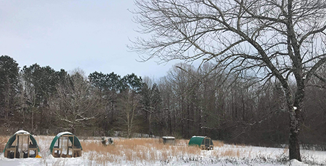
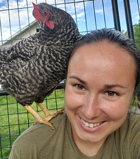
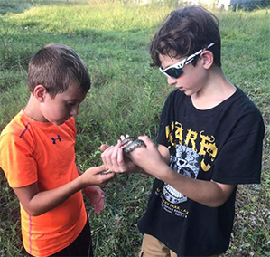

Welcome
Thank you for visiting our site! We live in Alexander, Arkansas and run a small homestead with our kids. We are passionate about homesteading and living sustainably and hope to connect with others. We hope to develop this site into a valuable resource for others that are getting started on this way of life! Please check in often to see what's new, or contact us if there is any way we can help you!
-Anya & Matt Littlefield
  